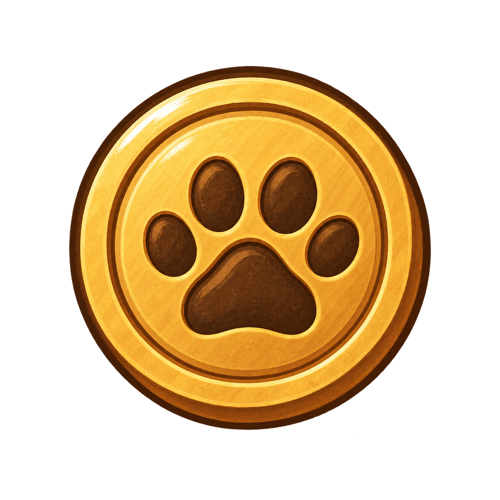
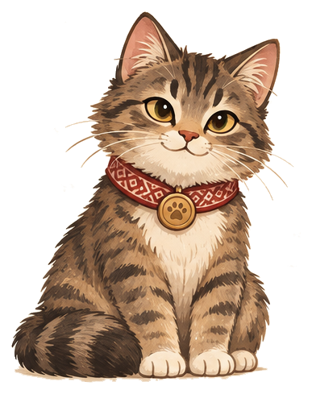

Грошик · проба анимации
Характер в движении
Погладьте Грошика, смените эмоцию или посмотрите,
как может выглядеть его взросление.
Лесной домик
Грошик

30 монет1 стадия · Малыш

Хорошо, что ты рядом!
До новой стадии1 / 2 дня
Погладьте Грошика, смените эмоцию или посмотрите,
как может выглядеть его взросление.

30 монет